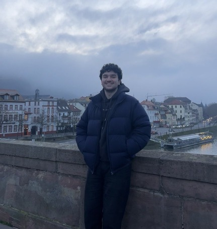

👋 Hello! It’s nice to meet you. I’m Murad, and it’s my tiny space on the web.
I am a Software Engineer based in Central Germany. I love learning about technology and figuring out how things work under the hood, usually rubberducking with the lovely duck next to my keyboard. Obsessed with Go, and my favorite IDE is NeoVim. Besides tech, I enjoy music, chess, working out and solo dating. You can learn more about me, and see what I’m up to right now.